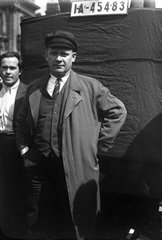
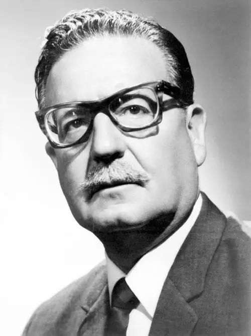

伟人们

卡尔·马克思（全名：卡尔·海因里希·马克思，Karl Heinrich Marx，1818年5月5日-1883年3月14日），出生于特里尔，马克思主义的创始人之一，第一国际的组织者和领导者，马克思主义政党的缔造者，全世界无产阶级和劳动人民的革命导师，无产阶级的精神领袖，国际共产主义运动的开创者。

弗拉基米尔·伊里奇·列宁（1870年4月22日—1924年1月21日），原名弗拉基米尔·伊里奇·乌里扬诺夫，俄国辛比尔斯克人（现乌里扬诺夫斯克市。无产阶级革命家、政治家、理论家、思想家。曾任苏联人民委员会主席（即苏联总理）工农国防委员会主席等重要职务。

弗里德里希·恩格斯（德语：Friedrich Engels，1820年11月28日－1895年8月5日），德国思想家、哲学家、革命家、教育家、军事理论家，是全世界无产阶级和劳动人民的伟大导师和领袖、马克思主义创始人之一。

恩斯特·台尔曼（Ernst Thälmann，1886年4月16日-1944年8月18日），男，出生在汉堡一个马车工人的家庭里。1903年加入德国社会民主党，1917年加入德国独立社会民主党，之后德国独立社会民主党因是否加入共产国际问题而分裂的时候，1920年11月，亲共产主义派与德国共产党合并。1920年12月台尔曼被选入德国共产党中央委员会。
恩斯特·台尔曼是工人阶级革命者，德国共产党主席，后被法西斯迫害致死。

毛泽东（1893年12月26日-1976年9月9日），字润之（原作咏芝，后改润芝），笔名子任。湖南湘潭人。中国人民的领袖，伟大的马克思主义者，伟大的无产阶级革命家、战略家、理论家，中国共产党、中国人民解放军和中华人民共和国的主要缔造者和领导人，马克思主义中国化的伟大开拓者，近代以来中国伟大的爱国者和民族英雄，中国共产党第一代中央领导集体的核心，领导中国人民彻底改变自己命运和国家面貌的一代伟人

萨尔瓦多·吉列尔莫·阿连德·戈森斯（英语：Salvador Guillermo Allende Gossens，西班牙语：Salvador Guillermo Allende Gossens）（1908年6月26日—1973年9月11日），智利医生、政治家、总统。
萨尔瓦多·阿连德1932年毕业于智利大学医学系，1933年参与创建智利社会党，1934年担任社会党瓦尔帕莱索支部秘书，1937年作为瓦尔帕莱索省和基略塔省代表当选为众议员，1937年—1939年任社会党瓦尔帕莱索支部秘书长，1939年—1942年担任卫生和社会福利部长，1943年—1944年担任智利社会党总书记，1945年当选为参议员，1953年、1961年和1969年三次连任参议员职务，1966年—1969年任参议院议长，阿连德在1952年、1958年和1964年三次参加总统选举，但均以失败告终，1970年9月—10月，他作为人民团结阵线的候选人参加总统选举，成功当选为总统，当年11月正式就职，1973年9月11日，以陆军总司令奥古斯托·皮诺切特将军为首的军人集团发动军事政变，阿连德在军事政变中以身殉职。
阿连德在总统任内实行国有化政策和土地改革、积极发展教育事业，外交方面加强智利同第三世界国家的联系和团结，与中国建交，执政后期智利国内经济形势恶化，政局动荡。